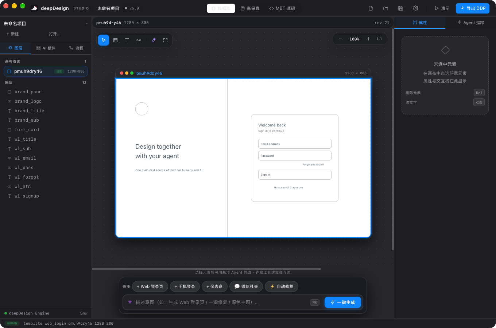
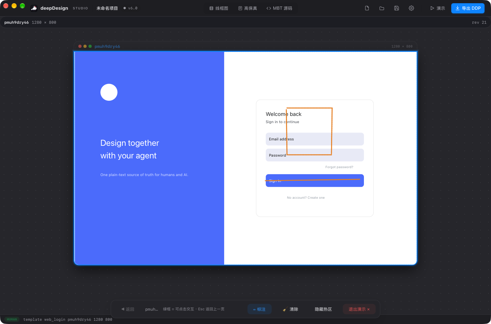
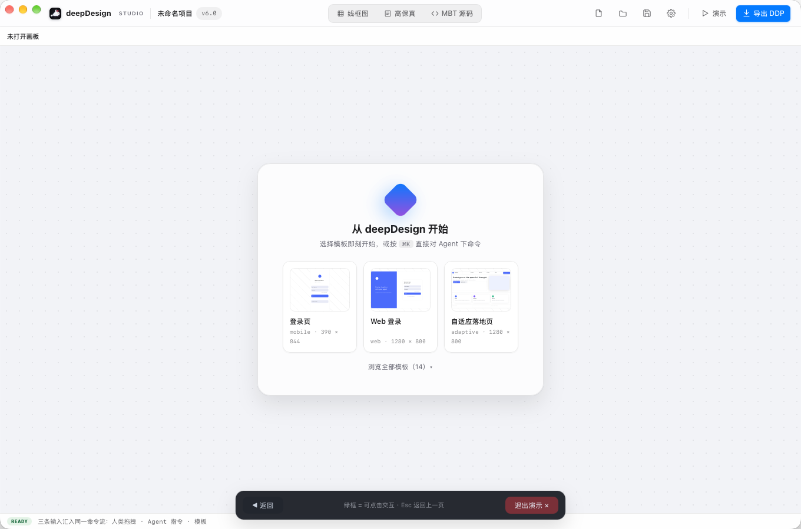
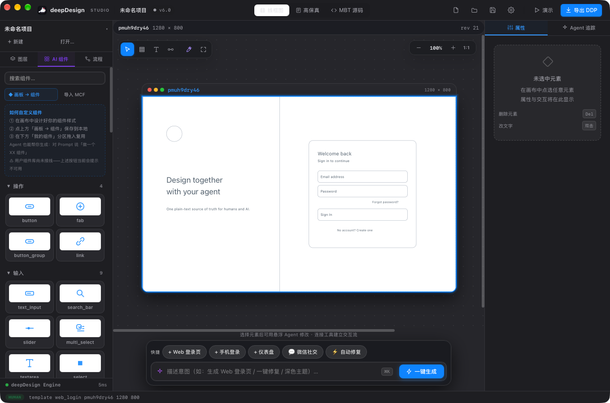

deepDesign Studio 是 AI 原生原型设计工具的桌面客户端：基于 MoonViz 引擎，
人类画布操作与 Agent 修改都经引擎校验后回写同一份 .mbt.md —— 看着设计一步步长出来，产出即验收。
不是给聊天框套个画布——Agent 循环、引擎校验、画布渲染在同一个进程里协同。
Rust Agent 循环 × wasmtime 宿主，无 JS 运行时、无子进程桥。OpenAI / Anthropic 双协议，thinking 等级按 8 家厂商方言下发。设计完成后自动进入三段收尾审查：需求完整度、操作逻辑连线、综合修复——发现缺口直接补齐。
Agent 执行过程画布实时可见：每步变更节流回传渲染上屏，不是等终态的黑盒。事实源仍由终态回灌收口，预览不污染文档。
最近项目下拉热切换（不重启应用）；每个项目可开独立系统窗口并行编辑，未保存更改按窗口保护；画板支持拖拽移动、自由排布。
底部操作栏导航、一键隐藏交互热区成真实成品观感、漏接交互的返回钮强制可点。✏ 全画板手绘批注：马克笔笔迹持久化在 DDP 内，重新打开自动重放、可修改。
Agent 历史三层裁剪：工具结果整形（剥离冗余校验块）、同源去重、按模型上下文窗口预算——多页长任务成本可控、不丢关键信息。
DeepSeek / GLM / Kimi / MiniMax 双协议 / StepFun 等，models.dev 快照本地化、离线可用。Argon2id + XChaCha20 加密导出（或免密 DDP2），与 ddpView 查看器回路一致。




Rust 不解释视觉语义——它只做搬运、宿主与加解密；一切设计语义都回到引擎校验。
.mbt.md，校验后即时渲染。deepDesign 站在开源的肩膀上，也以开源回馈。
deepDesign 的每一笔人类画布操作、每一次 Agent 修改，都由 MoonViz 校验回写。100% MoonBit、零手写 JS：47 个 Agent 工具走统一文本协议，HumanGate / AgentGate 双门守住设计质量，标准 classic WASM 产物让同一份引擎在 WebView 与 wasmtime 里逐字节一致地运行。.mbt.md 唯一事实源的设计由它定义、被整个生态遵循。没有 MoonViz，就没有 deepDesign。